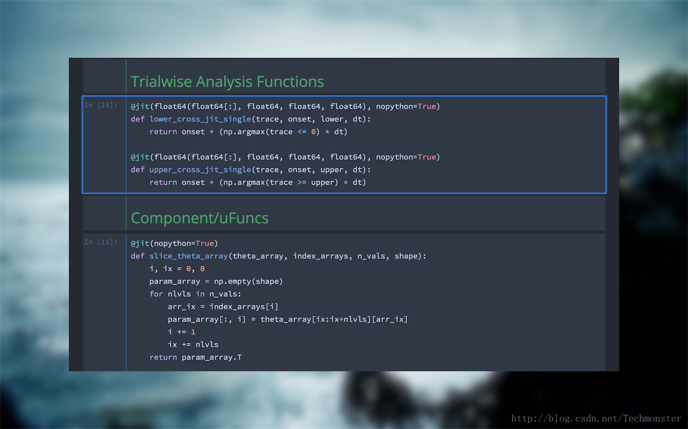
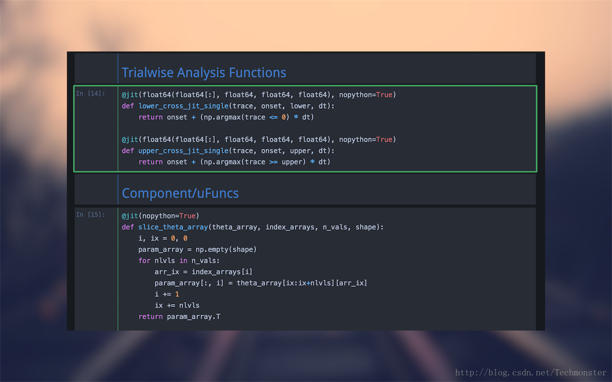
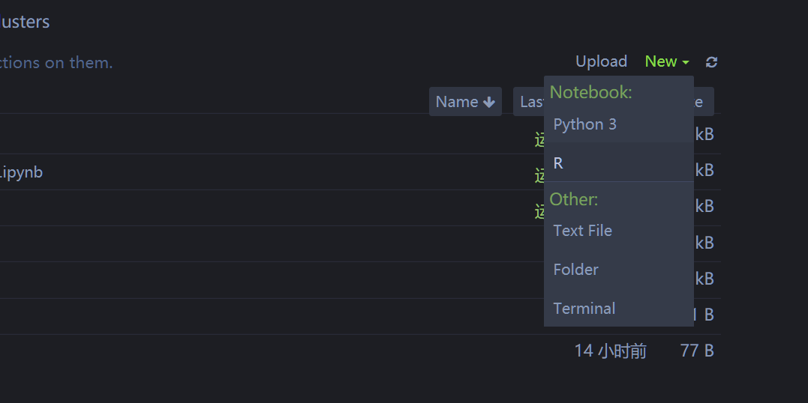

Python Cookbook
1 基础
2 Pycharm cookbook
2.1 注释快捷键
ctl+/
2.3 如何更改每个项目的解释器版本?
File -> Settings ->project -> Project Interpreter
然后选择即可.
2.4 创建文件
File -> new
2.5 运行代码
可以一行行的运行代码,修改默认快捷键位ctl+enter
2.6 修改默认的快捷键
在File ->keymap下
2.7 编码设置
需要将pycharm的所有编码设置为UTF-8.
- File -> Setting -> Editor -> File Encoding

同时在每个文件的开头添加:
#-*- coding: utf-8 -*3 Jupyter notbook
3.1 修改工作路径
打开默认时C盘.在Win中可以按照下面方法修改路径.
D:
cd ...然后使用下列命令启动jupyter notebook
jupyter notebook3.2 在某个文件夹下面打开jupyter botebook
直接在某个文件夹下面,shift + right click,选择open powershell window here,然后输入jupyter notebook即可.
3.3 修改jupyter note主题
3.3.1 首先安装jupyter-themes
pip install --upgrade jupyterthemes3.3.2 查看所有可使用主题
jt -l3.3.3 更改主题
jt -t theme_name3.3.4 恢复默认主题
jt -r3.3.5 各主题样式
3.3.5.1 oceans16

3.3.5.2 onedork

3.3.5.3 chesterish

3.3.5.4 grade3

3.4 在jupyter中使用R
3.4.1 关联jupyter notebook
install.packages(c('repr', 'IRdisplay', 'evaluate', 'crayon', 'pbdZMQ', 'IRkernel', 'uuid', 'digest'))
# 只在当前用户下安装
IRkernel::installspec()
# 或者是在系统下安装
IRkernel::installspec(user = FALSE)3.4.2 打开jupyter notebook
新建,选择R.就可以使用了.

3.5 Jupyter快捷键
3.5.1 命令行模式(按Esc生效)
| Shortcut | Function |
|---|---|
M |
把代码块变成标签 |
Y |
把标签变成代码块 |
X |
剪切选择的代码块 |
A |
在上面插入代码块 |
B |
在下面插入代码块 |
Z |
撤销删除 |
Xiaotao Shen
Postdoctoral Research Fellow
Metabolomics, Multi-omics, Bioinformatics, Systems Biology.